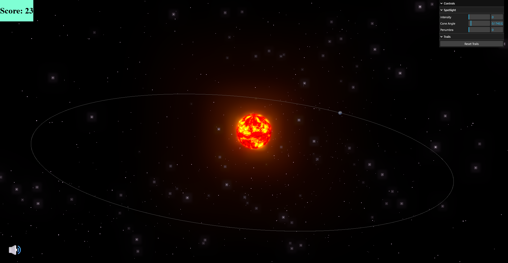
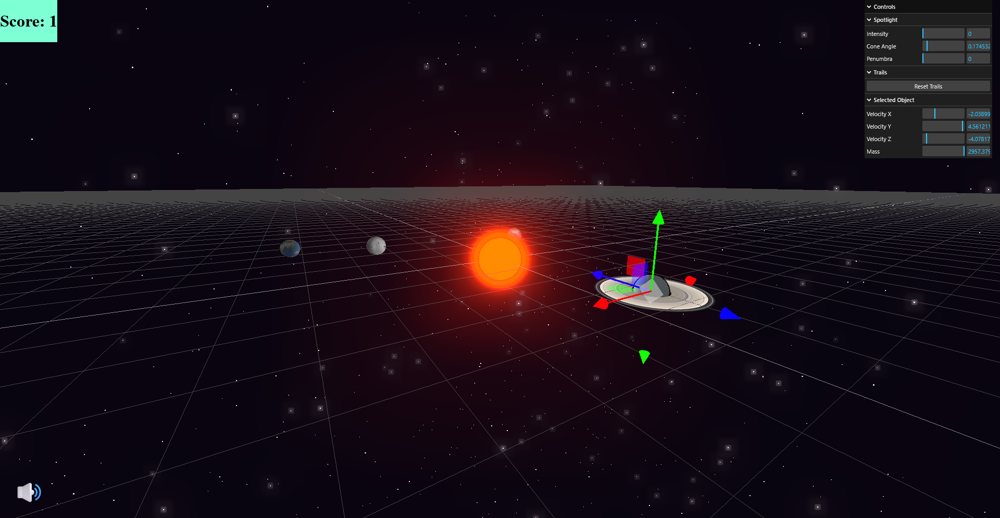

-
Completed
Byte & Bite
A web-based prototype food delivery app with a React frontend, a Spring Boot backend and a PostgreSQL relational database. Developed as a team of five for our software engineering course.
Technologies: TypeScript, Java, React, Spring Boot, PostgreSQL
-
Completed
Planetary Orbit Simulator
An interactive simulation of Kepler's laws of planetary motion made with Three.js. Developed as a team of four for our computer graphics course.
Technologies: JavaScript, Three.js, GLSL, HTML, CSS
 